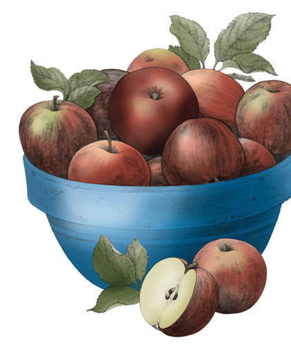
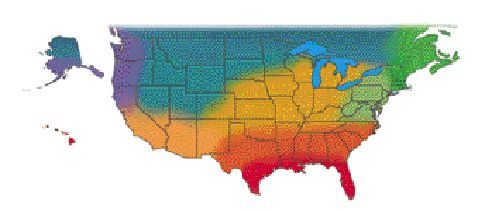
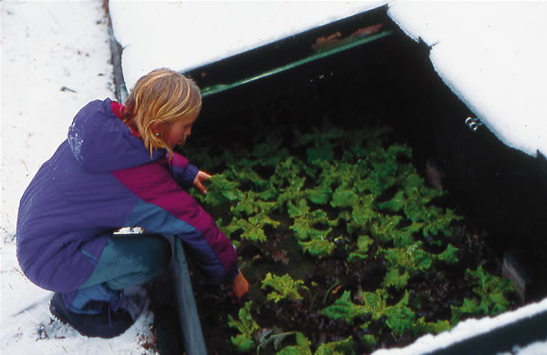
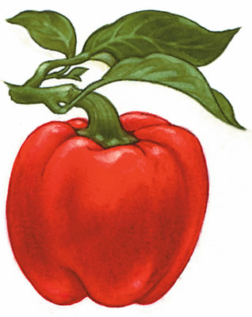

New England gardens are covered in a protective blanket of snow, but the arrival of new seed catalogs kindles distant memories of butter-tender broccoli and succulent tomatoes, as well as great ideas for holiday gifts. Two of my favorite products are the ho-mi or E-Z digger, an oriental hand tool with a curved blade that can bust sod or delicately cover a seed row, and Wet Stop gloves, which are exceptionally flexible and lightweight. Favorite vegetable varieties I plan to plant in 2006 include: Purple Peacock, a beautiful broccoli and kale cross with sweet broccoli florets; Cool Breeze cucumbers, which produce nonbitter pickling cukes; Papaya Pear, a deep-gold summer squash that holds its form well when cooked; and Jimmy Nardello frying peppers, which ripen early in a northern climate and are sublime when fried or roasted.
Roberta Bailey, FEDCO Seeds, Waterville, Maine
December is the month for gardeners to read seed catalogs and inspiring garden books. (Check out our guide to great garden catalogs; "seed catalogs" above.) You can find free seed-saving guides from www.savingourseed.org. Sort and inventory your seeds and store them in a cool, dry place. If you have a young person on your holiday list, consider giving the gift of gardening--your time and some fun seeds such as sunflowers, cherry tomatoes and pole beans. By mid-January, sow bulbing onion seeds in the greenhouse or cold frame. They are a challenge in our region, and the secret is to start them early and transplant them before they reach the diameter of a pencil. Or skip the hassle and grow yellow potato onions, the most reliably productive variety in the region. Inspect any root crops and squash you have in storage. Clean and repair the rototiller and other garden tools. Finish weeding and mulching rhubarb, asparagus, grapes, blueberries, currants and gooseberries.
Ira Wallace, Southern Exposure Seed Exchange, Mineral, Va.
Gardeners in coastal Georgia and in South Carolina as far north as Hilton Head Island can grow cool-season greens in December and January. In some areas of Florida, its still not too late for warm-season crops such as tomatoes. The rest of us can get the garden ready for early spring planting. Be sure that the soil acidity is correct and add lime or other amendments if necessary. Add compost, and in areas where you will plant early spring crops, turn under cover crops so they have a chance to decompose. Start cole crops such as cabbage and broccoli inside to transplant in the early spring. Plan your vegetable garden and order your seeds early for the best selection.
Becky Wilder, Seeds For the South, Graniteville, S.C.
While youre browsing through the latest seed catalogs, consider ordering a frost blanket. It will provide more protection than plastic against freezing weather. A temporary burlap fence can help block dry north winds, but it wont give your garden much frost protection. Mild winter temperatures make for a great season of cole crops, lettuce, carrots, beets, radishes and edible-podded peas. While youre enjoying these, go ahead and order seeds for summer crops. Youll need them to start a few early-bird tomatoes inside by mid-January. Collect organic matter: seaweed, manure and compost--the more the better. Wood chips can make good mulch, but dont work them into the soil because they will tie up nitrogen while they decompose. Devote some study time to learning how organic matter and composting can build soils. These are keys to successful gardening.
Bill Adams, Burton, Texas
If the urge to garden is strong, and you have adequate indoor light, grow a pot of herbs such as cilantro or basil. Or, plant a tray of lettuce for fresh greens in February! Resolve to plant something new next season. If it doesnt perform as you hoped, just pull it out and try something else. The 2006 All America Selections winners are good to include because they have been tested across the continent for several years. The Purple Haze carrot is sure to add variety and excitement to your garden. Cilantro Delfino has interesting serrated leaves, withstands bolting and has excellent flavor. Aim to use all the produce you have harvested and preserved from this past year by the time next seasons crops are ready. Search for new recipes to make use of what is on hand. This will keep your winter exciting and your harvesting purposeful. Bon apptit!
Connie Dam-Byl, William Dam Seeds Ltd., Dundas, Ontario
This is not the end of a growing season--it is the beginning of a new one. Harvest Brussels sprouts, kale and endive, which are still fresh under the snow and sweetened by the frost. Clean and organize any seeds you have saved for listing on seed exchanges, or throw a party to trade them with friends and neighbors. When communities start growing and exchanging seeds, everything will grow and taste better! Take a deep breath and imagine next summers bountiful garden. Dreaming of what you can accomplish during the next growing season may be the most important gardening task of all.
Bill McDorman, Seeds Trust, High Altitude Gardens, Hailey, Idaho
The days are cold and rainy, and spring seems light-years away. Why not fill some of those winter days by planning your vegetable garden? Dont limit yourself to just what will go where. Include such considerations as when to sow seed, when to transplant, approximate weeks to maturity, how many plants you need for your family and when the crop will mature. Peruse seed catalogs for new varieties as well as old standbys, and for inspiration and information. While you have the catalogs out, dont forget to consider gifts for gardening friends and family. Possibilities include mushroom kits that allow the lucky recipients to harvest fresh gourmet mushrooms right in their kitchens, a pair of rubber boots for wet days in the garden or myrtle wood baskets for harvesting.
Rose Marie Nichols McGee, Nichols Garden Nursery, Albany, Ore., and Josh Kirschenbaum, Territorial Seed Co., Cottage Grove, Ore.
Although most gardeners consider December a sleepy month, many of us are busy cleaning seed: removing the chaff and separating the heavy from the light. Then we test to make sure each seed lot surpasses standard germination rates, is the correct variety and is vigorous. Once January rolls around, we eagerly peruse catalogs to fill our gardens in the seasons to come. I give precedence to new varieties of flowers??I appreciate their beauty as well as the activity of the beneficial insects attracted to them. But timing is of the essence. Some native perennial species and herb varieties require a 30- to 90-day period of moist chilling before they will sprout, so dont delay sending in those orders. Youll be rewarded next summer when winter snows are transformed into fields of flowers.
Erica Renaud, Seeds of Change, Santa Fe, N.M.
|
 Enjoy homegrown apples into the winter by choosing varieties that store well such as ‘Arkansas Black’ and ‘Suncrisp.’ |
 Harvest lettuce and other greens in the middle of winter by planting them in a cold frame, which uses sheets of glass or clear plastic to capture the sun’s heat. |
 |
|
 |
|
|